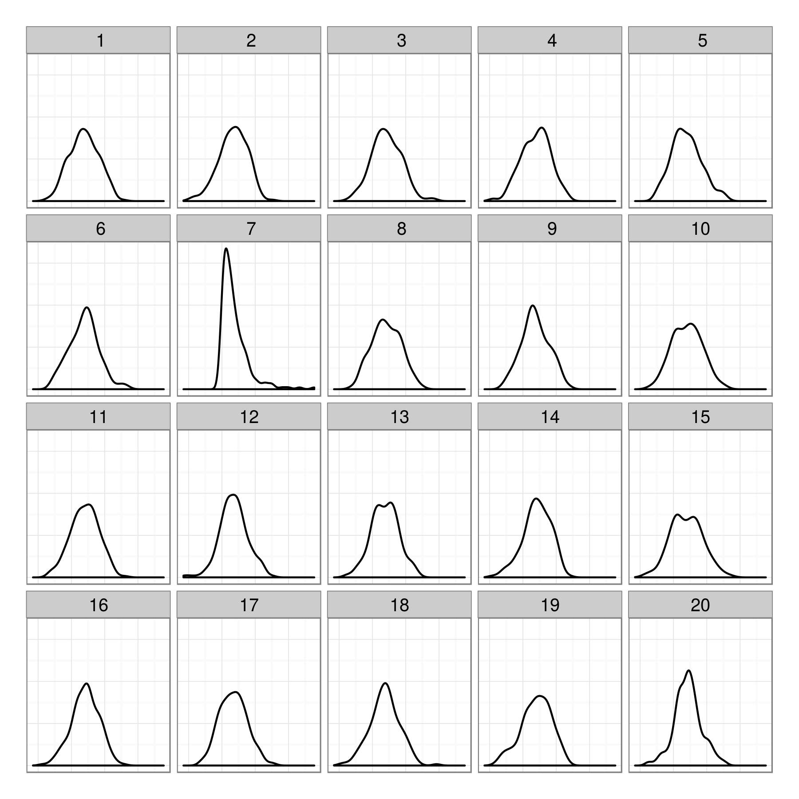
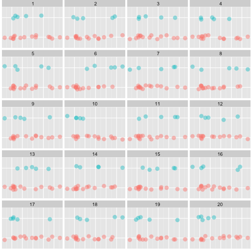
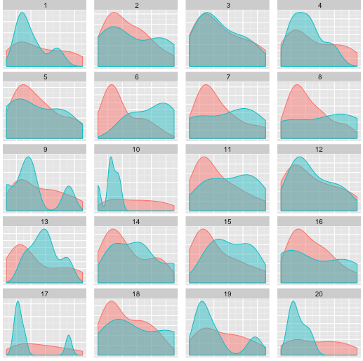
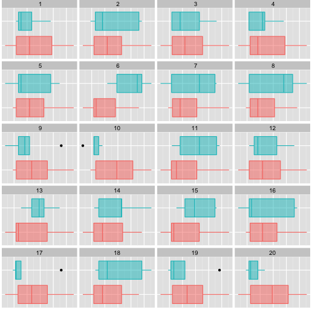
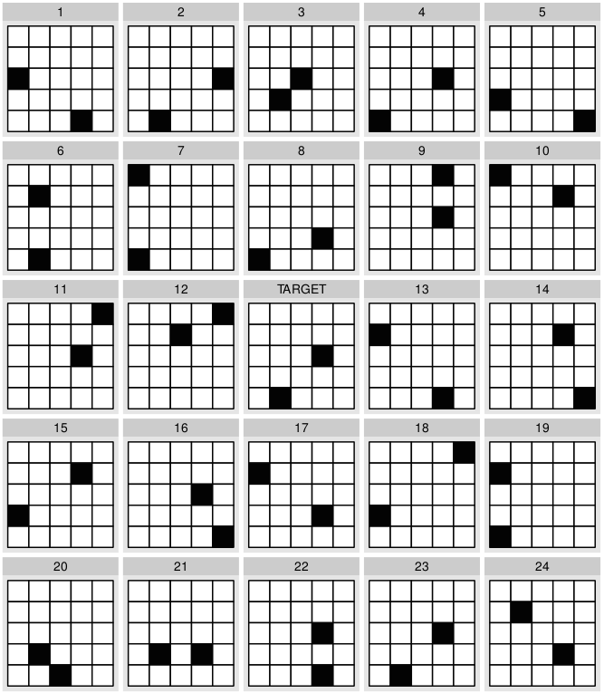
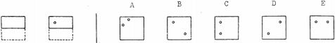
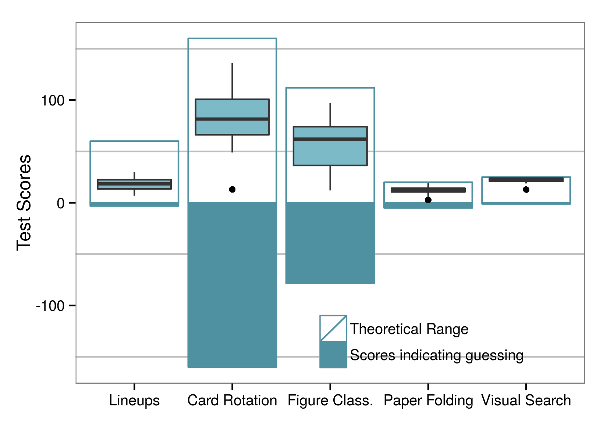
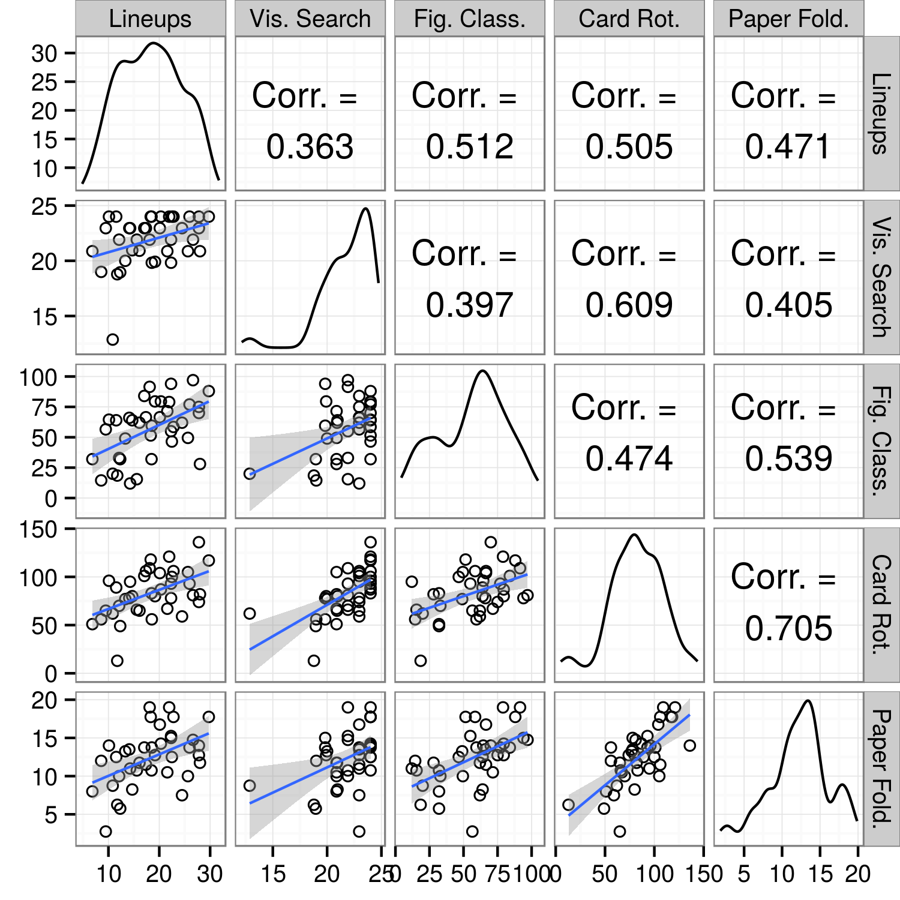
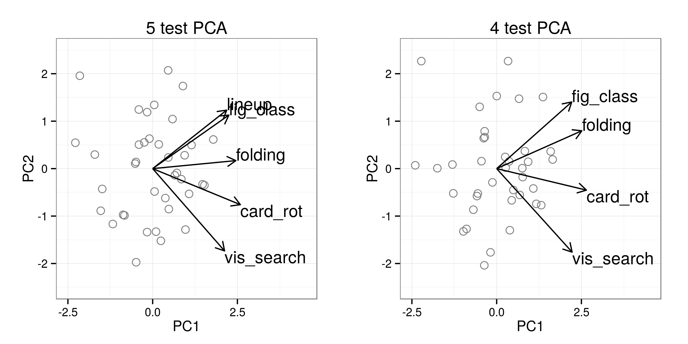
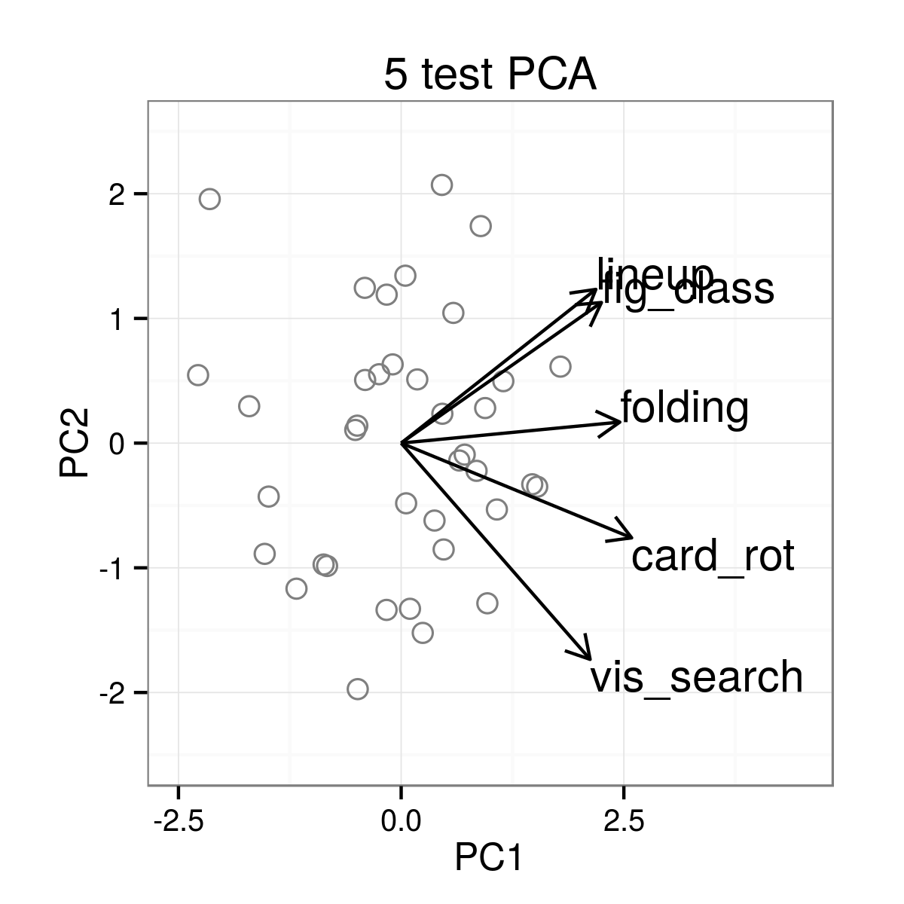

Spatial Reasoning and Data Displays
Susan VanderPlas & Heike Hofmann
October 28, 2015
Outline
Statistical Lineups
Method to compare the effectiveness of different types of statistical graphics
Statistical Lineups
|
 |
|
Statistical Lineup Methodology
- Hypothesis Test: All plots created under $H_0$
If data is identifiable, we reject $H_0$ for the data - Suppose for $K$ participants, $k$ identify the data plot.
Visual p-value: $P(X\geq k | H_0)$ - For the previous lineup,
Lineup p-values for 5 participants, when $k$ identify plot 7:$k$ 0 1 2 3 4 5 p-value 1.0000 0.2262 0.0226 0.0012 0.0000 0.0000 - Objective test of whether we see structure in the data display
Sample Lineup Experiment
- Generate many datasets where the target plot differs from the null plots due to a specific feature
e.g. group means differ, linear relationship, non-normal residuals...
- Render each dataset using several types of plots
Each lineup is one plot type $\times$ dataset combination
- Each participant evaluates many lineups
- Compare target identification rates for each plot type
Participant-level effects generally not of interest
Which one is not like the others?
Which one is not like the others?
Purpose
What visual or cognitive skills are necessary for statistical lineups?
How important are visual skills for using statistical graphics?
This Experiment
- Some people appear to be much better at identifying the target plots than others
...Why?
- Methodology Difference:
Examine an individual's accuracy
by correlating visuospatial skills and lineup score
Lineups
|  |
3 blocks of 20 lineups each Each set of lineups is from a different study with different plot types Participants have 5 minutes to complete each block of 20 lineups Majumder, M., H. Hofmann and D. Cook. “Validation of visual statistical inference, applied to linear models”. In: Journal of the American Statistical Association 108.503 (2013), pp. 942–956. |
Cognitive Tests
Visual Search Test
|  |
|
Figure Classification Test

- Measures ability to classify images according to ambiguous or unknown rules
- Participants complete up to 14 questions (each with 8 figures) in 8 minutes
-
French, J. W., R. B. Ekstrom and L. A. Price. Kit of reference tests for cognitive factors. Educational Testing Service. Princeton, NJ, 1963.
Card Rotation Test
- Measures ability to rotate objects (2D)
- Participants complete up to 20 questions (each with 8 figures) in 6 minutes
-
French, J. W., R. B. Ekstrom and L. A. Price. Kit of reference tests for cognitive factors. Educational Testing Service. Princeton, NJ, 1963.
Paper Folding Test
- Measures ability to visualize and manipulate objects (3D)
- Participants complete up to 20 questions in 6 minutes
-
French, J. W., R. B. Ekstrom and L. A. Price. Kit of reference tests for cognitive factors. Educational Testing Service. Princeton, NJ, 1963.
Experiment Design
Study Setup
|
|
Scores
|
 |
|
Results
Lineups & Demographics
Lineups & Demographics
| Variable | DF | MeanSq | F | p.val |
|---|---|---|---|---|
| STEM Major | 1 | 401.517 | 14.44 | 0.001 |
| Calculus 1 | 1 | 204.569 | 6.15 | 0.018 |
| Video Game hrs | 3 | 108.847 | 3.44 | 0.028 |
| Sex | 1 | 140.844 | 4.02 | 0.053 |
| Art Skills | 4 | 75.891 | 2.28 | 0.082 |
| Verbal Skills | 3 | 60.220 | 1.68 | 0.191 |
| STEM Research | 1 | 59.670 | 1.60 | 0.214 |
| AutoCAD | 1 | 50.893 | 1.36 | 0.252 |
| Age | 1 | 34.434 | 0.91 | 0.348 |
| Math Skills | 3 | 37.039 | 0.98 | 0.416 |
| Statistics Class | 1 | 9.062 | 0.23 | 0.631 |
Results are for single-variable regressions
Lineups & Visual Aptitude

Lineups & Visual Aptitude
Principal Components Analysis |
|
Conclusions
|
 PC1 shows general aptitude |